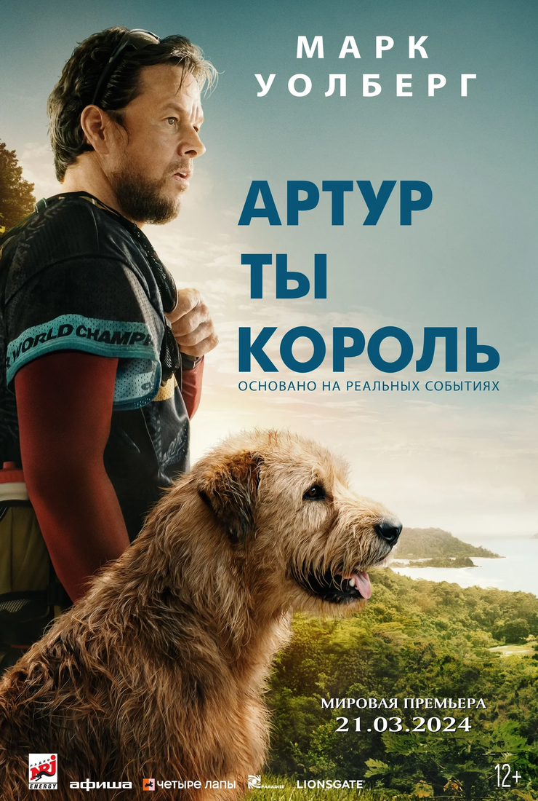
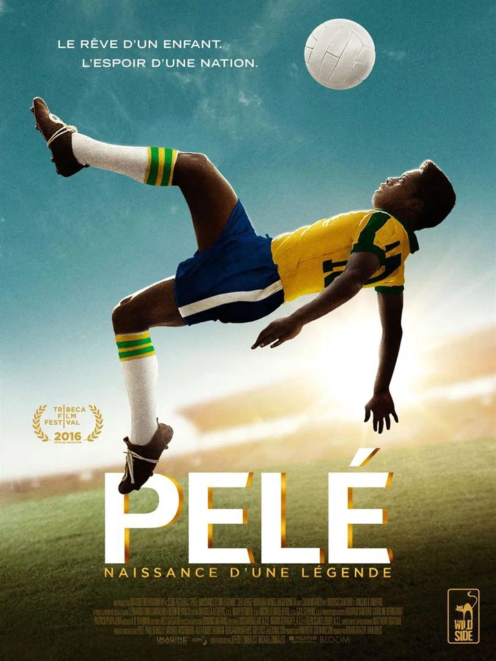
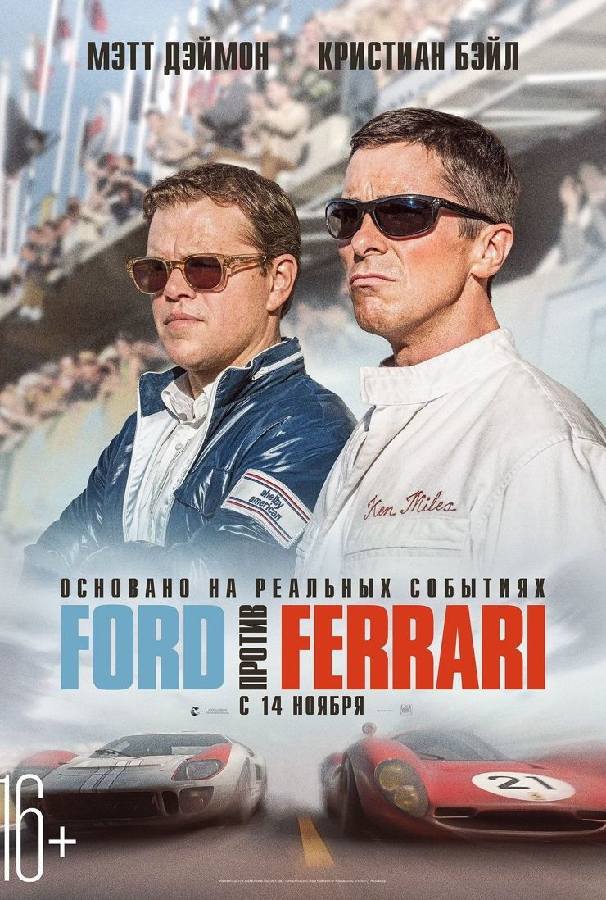

Подборка мотивирующих фильмов про спорт
Друзья! В этой статье подборка фильмов о беге, которые меня вдохновляют перед стартом:

"Артур, ты король" (2024)
Экранизация автобиографического бестселлера Михаэля Линднорда “Артур: собака, которая пересекла джунгли, чтобы найти дом”. Когда вы необходимо преодолеть 700 километров по джунглям и горам Эквадора, последнее, что требуется - это бродячая истощенная собака, идущая по пятам. Но именно это и случилось с Линднордом, капитаном шведской команды по приключенческим гонкам, который уже предвкушал свою победу. Встреча полностью разрушила его планы.
Рейтинг на кинопоиске - 8.4

"Пеле: Рождение легенды" (2015)
Художественный фильм о становлении легендарного Пеле – “Лучшего футболиста XX” века по версии ФИФА и рекордсмена по числу выигранных чемпионатов мира. Бразилия, конец 40-х годов прошлого века. Бойкий мальчишка из бедной семьи Эдсон Арантис ду Насименту грезит футболом. Его отец – в прошлом футболист – обучает сына и дает бесценные советы. “Если хочешь стать мастером, ты не должен стыдиться своих корней”, – сказал он однажды. В ответ маленький Эдсон пообещал добыть Кубок мира для Бразилии. Пройдет меньше 10 лет и у всех на слуху будет крохотный город Трес-Корасойнс штата Минас-Жерайс, потому что там родился великий футболист Пеле. Спустя еще десять лет его назовут Королем футбола. Смотрите онлайн в нашем интернет-кинотеатре байопик о жизни выдающего футболиста “Пеле: Рождение легенды”. В 15 лет начинающий атакующий полузащитник вошел в состав клуба “Сантос” и забил гол в первом же матче. Через два года состоялся его блестящий дебют в национальной сборной на Чемпионате мира 1958 года в Швеции, где в финале он провел два мяча в ворота хозяев. Пеле показал новый футбол и стал непревзойденным спортсменом на все времена.
Рейтинг на кинопоиске - 8.3

"Ford против Ferrari" (2019)
В начале 1960-х Генри Форд II принимает решение улучшить имидж компании и сменить курс на производство более модных автомобилей. После неудавшейся попытки купить практически банкрота Ferrari американцы решают бросить вызов итальянским конкурентам на трассе и выиграть престижную гонку 24 часа Ле-Мана. Чтобы создать подходящую машину, компания нанимает автоконструктора Кэррола Шэлби, а тот отказывается работать без выдающегося, но, как считается, трудного в общении гонщика Кена Майлза. Вместе они принимаются за разработку впоследствии знаменитого спорткара Ford GT40.
Рейтинг на кинопоиске - 8.2
"Невидимая сторона" (2009)
Фильм основан на реальных событиях. Очень часто именно эта фраза становится решающей для зрителя, сомневающегося при выборе киноленты, на которую не жалко потратить пару часов жизни. Спортивная драма режиссера Джона Ли Хэнкока “Невидимая сторона” как раз из таких. Вдохновляющая история Майкла Оэра, игрока Балтимор Рэйвенс послужила мощной платформой для крепкой режиссуры и цепляющей актёрской игры. Сандра Буллок исполнила здесь свою оскароносную роль мамы большого чернокожего парня, которому судьба раздала очень плохие карты. Сценарий картины, выдвигавшейся на “Оскар” в номинации лучший фильм года, основан на книге Майкла Льюиса, к творчеству которого Голливуд вновь обратится пару лет спустя, создавая другую спортивную драму “Человек, который изменил всё”. Майкл был 12 ребёнком в семье Оэр. Мама – наркоманка, отец – уголовник. А он – большой, застенчивый и добрый. Мальчик кочевал из одной приёмной семьи в другую, сменил больше десятка школ пока, наконец, на пути подростка не встретились люди, которые смогли разглядеть в нем человека.
Рейтинг на кинопоиске - 8.2
"Малышка на миллион" (2004)
Это история про обратную сторону жизни увлеченных спортивных рекордсменов. В один из дней в спортзале стареющего тренера по боксу и его давнего приятеля появляется хрупкая молодая женщина. Официантка Мэгги (Хилари Суэнк) давно мечтает заняться спортом. Старик сходу отказывается ее тренировать, однако разрешает приходить и иногда заниматься в своё удовольствие. Потеря лучшего ученика и большие успехи девушки подталкивают тренера взять Мэгги под свою опеку. Изнурительные тренировки и целеустремленность новой ученицы приносят свои плоды. Победы и известность сопутствуют им.
Рейтинг на кинопоиске - 8.1
"Гонка" (2013)
Чем ближе к смерти, тем острее чувствуешь жизнь - понимают гонщики “Формулы-1”, каждый из которых надеется на везение. Это реальная история пилотов-соперников Джеймса Ханта и Ники Лауды. Соперничество героев на трассе обернулось трагедией: Ники Лауда угодил в больницу, но через месяц с небольшим вернулся в команду, чтобы подтвердить свое чемпионство. Всем поклонникам “Формулы-1” или любителям спортивных драм рекомендуем смотреть онлайн фильм “Гонка”.
Рейтинг на кинопоиске - 8.1
"Тренер Картер" (2005)
Фильм основан на реальной истории, происшедшей в 1999 году в Ричмонде, штат Калифорния. Тренер школьной команды по баскетболу Кен Картер принял в середине сезона беспрецедентное решение, запретив игрокам, не испытавшим еще ни одного поражения, выходить на площадку из-за низкой успеваемости в школе. В итоге команда пропустила две игры в чемпионате, а юным баскетболистам был закрыт доступ в спортзал до тех пор, пока они не стали хорошо учиться. Поступок Картера вызвал одновременно и одобрение, и резкую критику со стороны родителей игроков и школьного руководства. Среди членов команды был и сын тренера, поступивший впоследствии в престижное учебное заведение.
Рейтинг на кинопоиске - 8.1
"Рокки" (1976)
Рокки - обычный парень, не обделённый боксёрским талантом. Но жизнь его не балует, поэтому всерьёз рассчитывать на успех ему не приходится. Так продолжается до тех пор, пока судьба не подбрасывает ему шанс все изменить. Драма о том, как простой паренёк следовал своей мечте и в конце-концов приобрёл славу.
Рейтинг на кинопоиске - 8.0
"Воин" (2011)
Глубокомысленный фильм о профессиональных боях. “Воин” – это история преодоления себя, собственных страхов и застарелых обид. “Воин” – это по-настоящему честный фильм о борьбе на ринге и в жизни. У каждого из героев в нем есть своя правда, которую они готовы защищать до последнего. Но кто же одержит верх? Томми Конлон спустя многолетнего отсутствия в родном городе возвращается домой и встречает отца, бывшего алкоголика, вставшего на путь исправления. Так как Томми приехал, в первую очередь, чтобы подготовиться к большому боевому турниру, отец предлагает стать его тренером. Подумав немного, Томми соглашается при одном условии: отец не будет пытаться наладить с ним отношения. Томми еще не знает, что этот турнир станет поворотным моментом в истории его семьи, ведь в финале ему придется сразиться не с кем иным, как с собственным братом.
Рейтинг на кинопоиске - 8.0
"Легенда №17" (2012)
После серьезного ДТП хоккеист хочет вернуться на лед ради важной игры. Основан на реальных событиях и рассказывает о восхождении к славе советского хоккеиста Валерия Харламова и первом матче “Суперсерии СССР — Канада” 1972 года.
Рейтинг на кинопоиске - 8.0
"Триумф" (2005)
Спортивная статистика тщательно регистрирует все рекорды. Но лишь живая память способна сохранить драгоценные мгновения триумфа человеческой воли к победе. Ведь сухие цифры на бумаге никогда не передадут того ощущения чуда, которое вызывают некоторые поистине фантастические достижения. А то, что произошло на первенстве по гольфу US Open в 1913 году, уместнее назвать именно чудом. Тогда никому не известный 20-летний паренек Франсис Уиме, считавшийся аутсайдером, наголову разгромил слывшего абсолютно непобедимым чемпиона Гарри Вардона. Причем разгромил элегантно, стильно и не без чувства юмора.
Рейтинг на кинопоиске - 8.0
"Бешеный бык" (1980)
Джейк ЛаМотта, получивший прозвище Бронксский Бык, - боксер. И все его психологические и сексуальные комплексы яростно извергаются на боксерском ринге. Под горячую руку ему попадается родной брат, ставший жертвой навязчивой паранойи и ревности Джейка, а также пятнадцатилетняя девочка, которой суждено было стать самой главной наградой Джейка... и преследующим его наваждением.
Рейтинг на кинопоиске - 8.0
"Фаворит" (2003)
На местном ипподроме появляется тёмная лошадка: маленькая и не годная для гонок. Её жокей – слепнущий Ред Поллард. А хозяин лошадки – Чарльз Ховард, человек, который позже наладит торговлю автомобилями по всей Западной Америке. Ведь невзрачной лошадке удастся обогнать непобедимого фаворита скачек и добиться титула “Лучшая лошадь”.
Рейтинг на кинопоиске - 7.8
"Тренер" (2014)
Фильм, о том, как в 1987 году в маленьком городке МакФарланд профессиональный тренер создает команду по легкой атлетике из обычных сорванцов и мелких “хулиганов” и доводит эту команду до вершины спортивного Олимпа.
Рейтинг на кинопоиске - 7.7
"Префонтейн" (1997)
Потрясающий фильм о драматической жизни легендарного Стива Префонтейна. Не имея данных, Стив становится знаменитым бегуном. Для него не существовало нерушимых границ и недостижимых рекордов. Но солнце олимпийского золота жестоко к тем, кто подлетает к нему слишком близко. На пути к победе Префонтейну пришлось пережить горечь поражений, способных остановить любого, но только не его. Великое и трагическое - две стороны золотой медали, и Стиву Префонтейну суждено было стать самой трагической великой звездой мирового спорта.
Рейтинг на кинопоиске - 7.7
"Гран туризмо" (2023)
Геймер Янн Марденборо всегда хотел стать настоящим автогонщиком, но пока он довольствовался лишь игровыми состязаниями. Его мечта неожиданно исполняется, когда он, одержав победу в нескольких турнирах Gran Turismo, оказывается приглашён в настоящую команду по гонкам. Эта идея принадлежит маркетологу Дэнни Муру, задумавшему подготовить талантливых геймеров к соревнованиям на треке.
Рейтинг на кинопоиске - 7.7
"Человек, который изменил всё" (2011)
Это неординарная и увлекательная спортивная драма, основанная на реальных событиях, о решительном и смелом руководителе бейсбольной команды, поставившем всё на новую и, казалось бы, рисковую схему подборки игроков. Малоизвестную бейсбольную команду “Окленд Атлетикс” постигла череда неудач и проигрышей. После разгромного поражения в чемпионате 2001 года бюджет команды существенно сократился. Менеджер “Атлетикс” Билли Бин понимает, что денег на покупку крепких, а, значит, и дорогих игроков у него нет. Судьба сводит его с выпускником Йельского университета, талантливым экономистом Питером Брендом. Тот предлагает купить вместо одного дорогого игрока нескольких малоизвестных и “бюджетных”, ориентируясь на их личную статистику.
Рейтинг на кинопоиске - 7.7
"Эдди “Орёл” (2015)
С самого детства Эдди Эдвардс грезил Олимпийскими играми. Неуклюжий мальчик в очках пробовал заняться всеми видами спорта, которые могли бы привести его на Олимпиаду, но неудачи почти убили веру в невозможное, и он, смирившись, решил продолжить семейное дело и стать штукатуром. Как раз в этот момент Эдди увидел лыжный склон и решил во что бы то ни стало попасть на Зимние Олимпийские игры. Немного потратив себя на горные лыжи, он выясняет, что у Великобритании уже несколько десятилетий не было прыгуна на лыжах с трамплина. Преисполненный решимости Эдди отправляется на знаменитую тренировочную базу в Германию.
Рейтинг на кинопоиске - 7.7
"Король Ричард" (2021)
Комптон, 1988 год. Отец пяти дочерей Ричард Уильямс уже давно составил подробный план на будущее своих девочек и упорно ему следует, а из восьмилетней Винус и семилетней Серены он намеревается сделать звёзд тенниса. Хотя Ричард с женой Брэнди мало что понимают в подготовке профессиональных теннисистов, они сами тренировали дочек и как могли ставили им технику. Всемирно известный тренер Пол Коэн, который работает с Питом Сампрасом и Джоном Макинроем, соглашается на бесплатные уроки, но только для Винус. Тогда Ричард записывает занятия на камеру, и Брэнди на их основе начинает тренировать Серену.
Рейтинг на кинопоиске - 7.6
"Движение вверх" (2017)
Есть победы, которые меняют ход истории. Победы духа, победы страны, победы всего мира. Таким триумфом стали легендарные “три секунды” - выигрыш сборной СССР по баскетболу на роковой мюнхенской Олимпиаде 1972 г. Впервые за 36 лет была повержена “непобедимая” команда США. Никто даже помыслить не мог о том, что это возможно – обыграть великолепных непогрешимых американцев на Олимпийских играх! Никто, кроме советских баскетболистов (русских и грузин, украинцев и казахов, белорусов и литовцев). Когда проигрыш означал поражение страны, когда нужно было выходить и бороться в раскаленной обстановке из-за произошедшего теракта, великий тренер сборной СССР был готов на все, лишь бы помочь своим подопечным разбить американский миф о непотопляемой команде мечты. Ведь он знал, что создал самую сильную сборную на планете, и в начале заставил поверить в это своих игроков, а затем весь мир.
Рейтинг на кинопоиске - 7.5
"42" (2013)
В 1947 году Джеки Робинсон стал первым афроамериканцем, игравшим в Высшей лиге бейсбола в современную эпоху, когда онx подписал контракт с "Бруклин Доджерс" и столкнулся при этом с проявлениями расизма. Фильм посвящен тому, как Брэнч Рики и Джеки Робинсон уничтожили сегрегацию в бейсболе.
Рейтинг на кинопоиске - 7.5
"Рестлер" (2008)
В конце 80-х годов Рэнди “Баран” Робинсон был известным профессиональным рестлером. Сегодня, спустя двадцать лет, он зарабатывает на жизнь выступлениями перед немногочисленными фанатами рестлинга в школьных спортзалах и общественных центрах по всему Нью-Джерси. Постаревший Рэнди задумывается о своей жизни. Он пытается воссоединиться с дочерью и завязывает роман со стареющей стриптизершей. Однако, ничего не может сравниться с притягательностью ринга.
Рейтинг на кинопоиске - 7.5
"Лев Яшин. Вратарь моей мечты" (2019)
1949 год. Заменив знаменитого Хомича, молодой вратарь Лев Яшин играет первую игру в основном составе московского “Динамо” и пропускает стыдный гол в пустые ворота. Начинающему спортсмену предстоит многому научиться и преодолеть множество трудностей, прежде чем стать всемирно признанным гениальным голкипером, известным молниеносной реакцией и потрясающим видением поля.
"Один вдох" (2020)
В сорок лет Марина Гордеева неожиданно открывает для себя фридайвинг – экстремальное подводное плавание. Погружаясь на глубину, она бросает вызов своему страху и пределу человеческих возможностей. Виктория Исакова, Владимир Яглыч, Максим Суханов, Артем Ткаченко и Стася Милославская в перехватывающей дыхание спортивной драме Елены Хазановой “Один вдох”. Прототипом главной героини стала “королева фридайвинга” Наталья Молчанова, установившая 41 мировой рекорд. Около трети фильмы занимают завораживающе красивые и напряженные подводные съемки, не имеющие аналогов в российском кино. Марина Гордеева – сорокалетняя женщина с незавидной, но, в целом, обычной судьбой. Она живет в небольшом городе, работает на нелюбимой работе; ее брак распался, дети выросли, отношения с собственным отцом не складываются. Все так бы и шло по накатанной, если бы Марина почти случайно не открыла в себе талант к фридайвингу – плаванию на глубину с задержкой дыхания. Несмотря на свой возраст, непонимание окружающих и смертельный риск, Марина начинает профессионально заниматься этим малопопулярным в России видом спорта. Немолодой спортсменке удается сделать то, что еще не делала ни одна женщина. Ее страхи и травмы прошлого остаются за спиной, а впереди – морская бездна, притягательная и опасная, как сама свобода.
Рейтинг на кинопоиске - 7.4
"Air: Большой прыжок" (2023)
1984 год. Маркетинговый скаут из баскетбольного отдела Nike Сонни Ваккаро хоть и не разбирается в спортивной обуви, но имеет чутьё на таланты. Начальство хочет привлечь для заключения рекламных контрактов трёх перспективных игроков подешевле, а Сонни настаивает на выборе только одного - восходящей звезды Майкла Джордана. Всем известно, что спортсмен предпочитает играть в кроссовках Adidas и также рассматривает сотрудничество с Converse, поэтому Сонни решает сделать ему уникальное предложение: создать именной бренд и разработать линию кроссовок специально для Джордана.
Рейтинг на кинопоиске - 7.4
"Сила воли" (2016)
История легендарного чернокожего атлета Джесси Оуэнса, чье невероятное упорство привело его на Олимпийские игры 1936 года в нацистском Берлине. Встретившиеся на его пути преграды и искушения — ничто в сравнении с грандиозным забегом, за которым следил весь мир. Затаив дыхание, одни надеялись на победу Джесси как на символ справедливости и достоинства, а другие жаждали его поражения во имя триумфа идеологии. Несколько секунд — и Джесси ворвался в историю, бросив дерзкий вызов самому Гитлеру.
Рейтинг на кинопоиске - 7.4
"Несломленный" (2014)
Фильм про американского легкоатлета Луи Замперини, который участвовал в Олимпийских играх 1936 года в Берлине. Он не одержал победы в финальном забеге, но снискал расположение Гитлера, который пригласил его к себе в ложу. Предполагалось, что Замперини примет участие и в следующих Олимпийских играх, но из-за начала Второй мировой войны он был вынужден отправиться на фронт. Его самолет потерпел крушение над Тихим океаном, после чего Замперини вместе с двумя сослуживцами провёл 47 дней в дрейфе на плоту и попал в плен к японцам.
Рейтинг на кинопоиске - 7.4
"Джерри Магуайер" (1996)
Уволенный за критику начальства спортивный агент Джерри Магуайер решает создать свою фирму. Лишь два человека верят в него - влюбленная в Магуайера Дороти и Род Тидвелл - талантливый спортсмен, но нахальный и крайне злобный тип. Но обстоятельства не останавливают Джерри - он уверен в себе и твердо знает, чего хочет. И все могло бы быть как нельзя лучше, если бы не его бывшие коллеги. Для них все методы хороши, особенно если нужно доказать правдолюбцу, кто правит бал. И Джерри Магуайер знает - если он проиграет, то встать на ноги ему не удастся никогда.
Рейтинг на кинопоиске - 7.4
"Тоня против всех" (2017)
Американской фигуристке Тоне Хардинг пришлось нелегко: сначала тяжелое детство с грозной матерью, потом тяжелая юность, ранний брак с проходимцем и неудачи на соревнованиях из-за заниженных судьями оценок. А потом случился скандал: во время важнейших соревнований план запугать конкурентку выходит Тоне боком.
Рейтинг на кинопоиске - 7.3
"Парень-каратист" (1984)
В одной из школ Лос-Анджелеса появляется новичок - тинэйджер по имени Дэниел. Он прибыл с восточного побережья вместе со своей матерью. Нелегко завести друзей на новом месте, где ты не знаешь никого, а тем более в школе, где управляет жестокая банда каратистов. Несмотря на свой юный возраст, члены банды очень опасны. Они называют себя Кобрами и жестоко “жалят” каждого, кто им не угоден. В списки неугодных попадает и Дэниел после того, как он знакомится и заводит дружеские отношения с бывшей девушкой главаря Кобр. Кобры избивают новичка. Дэниел жаждет отмщения и в тоже время хочет произвести впечатление на свою новую девушку. Он обращается к мастеру восточных единоборств Мийаги с просьбой обучить его карате.
Рейтинг на кинопоиске - 7.3
"Джордж Форман: Несокрушимый" (2023)
Джордж Форман - легендарный боксёр-профессионал в тяжёлом весе. Проведя детство в бедности, Форман направил всю природную агрессию на достижение титулов золотого медалиста Олимпийских игр и чемпиона мира в тяжёлом весе. Спустя годы успешной карьеры, пережив околосмертный опыт, Форман променял боксёрский ринг на проповедничество и служение церкви. Но увидев нужду боксёрского общества в духовном и финансовом руководстве, Джордж Форман вернулся на ринг и снова творил историю, став старейшим чемпионом мира в тяжёлом весе и доказав, что в боксе возможно всё, несмотря на возраст.
Рейтинг на кинопоиске - 7.2
"Могучие утята" (1992)
Когда-то в юности адвокат Гордон Бомбей играл в хоккей. Через много лет судьба снова дает ему шанс вернуться в большой спорт. За правонарушение он приговорен городскими властями к общественным работам в качестве тренера детской хоккейной команды, самой худшей в лиге. Подопечные Гордона не умеют кататься на коньках, все время промахиваются мимо ворот и созданы только для того, чтобы проигрывать. Адвокат называет свою команду “Могучие утята” и начинает готовить ее к победе. Приближается долгожданный финал.
Рейтинг на кинопоиске - 7.2
"Вперед!" (2022)
Очень интересный фильм о двух братьях, которые после смерти отца начинают промышлять ограблениями. Их замечает тренер по лёгкой атлетике, приехавший из города в аул для отбора талантливой молодежи. На долю братьев выпадают непростые испытания, а трагический случай меняет их жизнь. Одному из них предстоит победить чемпиона мира в марафонском беге.
Рейтинг на кинопоиске - 7.1
"Финишная прямая" (2011)
Проведя пять лет в тюрьме, Лейла выходит на свободу. Она встречает молодого атлета Янника, который потерял зрение после несчастного случая. Несмотря на свою инвалидность, он продолжает практиковаться в беге, но ему нужен спутник-поводырь. Сама в прошлом атлет, Лейла решает помочь ему.
Рейтинг на кинопоиске - 7.1
"Тренер" (2018)
Футболист национальной сборной Юрий Столешников в ответственный момент не забивает пенальти. После досадной ошибки Столешников покидает сборную, завершает карьеру и становится тренером маленькой провинциальной команды. Именно с этим клубом Столешникову предстоит совершить чудо и вновь поверить в себя.
Рейтинг на кинопоиске - 7.0
"Лёд" (2017)
С самого детства Надя верила в чудеса. Она представляла себе, как выходит на лёд под овации публики и танцует свой самый красивый танец. И вот, благодаря вере и упорству, Надя становится знаменитой фигуристкой. Но когда ее мечты о громких победах, красивой жизни и прекрасном принце уже, кажется, готовы исполниться, судьба преподносит ей настоящее испытание.
Рейтинг на кинопоиске - 6.9
*Огненные колесницы" (1981)
Историческая драма, снятая на основе реальных событий, рассказывает о судьбе двух вечно соперничающих атлетов-бегунов, представлявших Великобританию на Олимпийских играх 1924 года в Париже: студента Кембриджа, еврея Гарольда Абрахамса и шотландского миссионера Эрика Лиддела.
Рейтинг на кинопоиске - 6.8
"Добейся успеха" (2000)
Между девчонками из групп поддержки спортивных команд разгорается нешуточная борьба за звание лучшей. В ход идут самые неожиданные приёмы и ухищрения. Но чтобы стать первой, команде нужно победить в национальном чемпионате, а этого смогут добиться только самые красивые, талантливые, задорные и сексуальные.
Рейтинг на кинопоиске - 6.8
"Белый снег" (2021)
Фильм повествует о том, как маленькая девочка Лена из Магадана, преодолев все испытания, достигла высочайших успехов в спорте, а также о реальных событиях, произошедших в 1997 году на чемпионате мира по лыжным видам спорта в Норвегии, когда впервые в истории лыжных гонок российская лыжница Елена Вяльбе завоевала пять золотых медалей из пяти возможных.
Рейтинг на кинопоиске - 6.7
"Играй, как Бекхэм" (2002)
Джесс только 18, но она твердо знает, что сделает ее счастливой: футбольная карьера, такая же, как у знаменитого игрока “Манчестер Юнайтед” Дэвида Бекхема. Пока она гоняет мяч в лондонском парке, доказывая соседским мальчишкам, что девушки играют в футбол не хуже, ее родители и многочисленные родственники, как и положено традиционной индийской семье, подыскивают для нее достойного мужа и строят планы о ее будущей карьере юриста. Однажды, во время очередной разминки, Джесс знакомится с Джулз и та приглашает ее на тренировку в женскую футбольную секцию. С замиранием сердца она следует за своей новой приятельницей, и мечта становится реальностью: Джесс принимают в настоящую футбольную команду. В довершение ко всему она влюбляется в своего тренера Джо. Понимая, что семья никогда не примирится с ее выбором, Джесс наслаждается своим кратковременным счастьем и готовится отстаивать свои права до конца.
Рейтинг на кинопоиске - 6.7
"Битва полов" (2017)
История соперничества между 55-летним чемпионом Уимблдона Бобби Риггсом и 29-летней теннисисткой Билли Джин Кинг. Легендарный матч, прошедший в 1973 году, собрал возле экранов более 50 миллионов американцев и доказал, что профессиональные спортсменки способны на равных состязаться с коллегами-мужчинами.
Рейтинг на кинопоиске - 6.4
"Свитуотер" (2023)
Натаниель, будущая звезда баскетбола, родился в Англии, где с детства увлекался спортом и предпочитал здоровый образ жизни. После переезда в Чикаго его потенциал заметили даже школьные тренеры, но его карьера была прервана Второй мировой войной, которую он провел в армии США. После окончания войны он присоединился к профессиональной команде чернокожих игроков и оставался лучшим баскетболистом на протяжении многих лет.
Рейтинг на кинопоиске - 6.4
"Жизнь на этих скоростях" (2017)
После страшной автокатастрофы школьник Кевин теряет всех друзей, одноклассников и свою девушку, а сам чудом выживает. Чтобы справиться с трагедией, он начинает заниматься бегом на длинные дистанции. Кевин – обычный старшеклассник, который учится в сельской школе. Вместе со своими друзьями он едет на автобусе на соревнования. Среди них есть и любимая девушка Кевина, дочь тренера, с которой он обсуждает планы на будущее. Тренеру эти отношения явно не нравятся, и он пытается рассадить ребят. Возникает ссора, в результате чего разозленный Кевин пересаживается в машину родителей, едущих следом. Далее происходит ужасное: автобус попадает в аварию, в которой все погибают. Это становится сложнейшим испытанием для Кевина, ведь он не только теряет близких, но и чувствует себя виноватым за то, что единственный выжил. Чтобы «убежать» от депрессии и справиться с горем, парень начинает заниматься бегом. Его замечает хороший тренер, который постепенно делает из Кевина профессионального спортсмена.
Рейтинг на кинопоиске - 6.1
"Чемпионы" (2014)
Красивая и патриотичная спортивная драма отечественного производства, рассказывающая о жизни и судьбе гениальных советских и российских спортсменов. Главные роли в фильме исполнили такие звезды, как Алексей Чадов, Светлана Ходченкова, Константин Крюков, Марк Богатырев, Игорь Верник и другие. Фильм состоит из пяти реальных историй российских спортсменов. Знаменитый советский биатлонист Круглов-старший готовит своего сына Круглого-младшего к зимней олимпиаде. Звезда фигурного катания Елена Бережная переживает страшную травму. Все твердят, что она уже не сможет выйти на лед. Но благодаря упорству, а также поддержке любимого человека, Елена снова выступает и получает золото на олимпиаде. Юная сноубордистка Екатерина Илюхина, преодолев свой страх, впервые представляет страну в этом новом виде спорта. Несмотря на ужасную полосу неудач, знаменитый хоккеист Илья Ковальчук вырвет победу у Канады. А конькобежка Светлана Журова получит золотую медаль даже после долгого перерыва.
Рейтинг на кинопоиске - 5.9